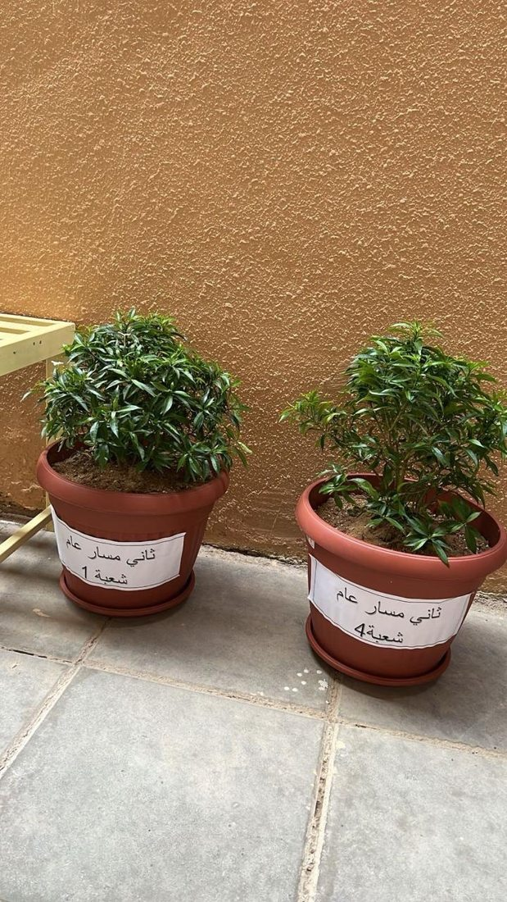

نزرع لننمو
أنشطة زراعية عملية تعزز المسؤولية البيئية والعمل الجماعي.
رحلة تعليمية تجمع الإبداع والتقنية والعمل البيئي؛ نزرع فكرة اليوم لنصنع أثر الغد.

مساحة توثّق المبادرات البيئية والأنشطة الإبداعية والتجارب الرقمية التي تعزز الوعي بالاستدامة وتربط تعلم اللغة الإنجليزية بالحياة.
أنشطة زراعية عملية تعزز المسؤولية البيئية والعمل الجماعي.
تحويل المواد والأفكار البسيطة إلى رسائل تعليمية هادفة.
توظيف التقنية والتفاعل الرقمي لخدمة التعليم والتوعية البيئية.
صور أصلية من الأنشطة والمبادرات؛ اضغطي على أي صورة لتكبيرها.
الاستدامة ليست درسًا واحدًا؛ إنها ممارسة، ووعي، وعمل مشترك.
GoGreen AI — Our Green Legacy
العودة للبداية ↑